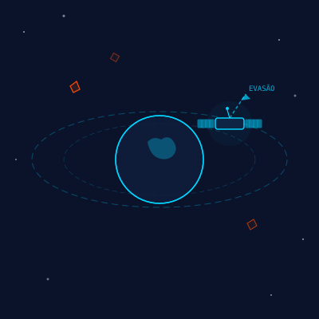
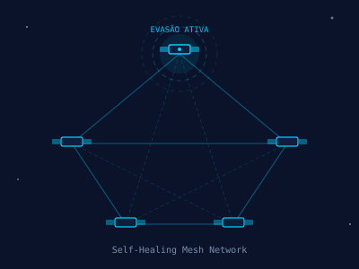
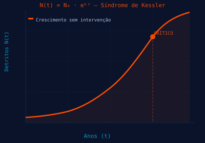

Evasão autônoma de detritos na borda.
Sem latência. Sem colisões. Sem Kessler.
// 01 — Problema
Satélites a 28.000 km/h não esperam comandos do solo.
Cada minuto de atraso aumenta o risco de colisão catastrófica.
Colisões geram mais detritos. Crescimento exponencial incontrolável.
Uplink de comando é lento demais. Decisão precisa ser embarcada.
Uma colisão pode inviabilizar a órbita. GPS e internet em risco.

// 02 — Tecnologia
IA embarcada decide em milissegundos, sem depender do solo.
Arduino, C++, Python e JavaScript formam o ecossistema completo.
Detecta detritos com sensor HC-SR04 simulando LIDAR orbital.
Calcula impacto em menos de 50ms. Decisão 100% embarcada.
Servo-motores acionados automaticamente simulando propulsores orbitais.
Vetor propagado à constelação. Vizinhos recalibram imediatamente.

// 03 — Objetivos
Cinco objetivos técnicos que tornam as órbitas mais seguras.
Cada meta elimina um ponto crítico de falha do modelo atual.
Decisão de manobra em menos de 50ms, sem uplink do solo.
Conter a Síndrome de Kessler antes que se torne irreversível.
Micro-correções calculadas pela IA consomem menos combustível.
Toda a frota compartilha vetores em self-healing colaborativo.
Logs automáticos enviados ao solo para revisão pós-manobra.
// 04 — Público-Alvo
De operadoras comerciais a agências governamentais e defesa.
Todos se beneficiam de órbitas seguras e confiáveis.
SpaceX Starlink e Amazon Kuiper. Milhares de satélites em risco crescente.
NASA, ESA e AEB. Missões científicas vulneráveis a detritos em LEO.
Intelsat e SES. Satélites de alto valor e baixa redundância orbital.
Governos e forças armadas com satélites de observação estratégica.
// 05 — Benefícios
A descentralização elimina os gargalos do modelo tradicional.
Cada benefício representa melhoria mensurável na operação orbital.
Decisão local elimina atraso solo-espaço. Resposta em milissegundos.
Evitar uma colisão poupa centenas de milhões de dólares por satélite.
Micro-manobras ótimas conservam propelente e estendem vida útil.
Frota inteira reage como organismo. Sem ponto único de falha.
Logs detalhados de cada decisão para análise humana pós-evento.
// 06 — Aplicação no Dia a Dia
Do hardware embarcado ao dashboard web, o fluxo é automático.
O operador audita — a IA age. Sem intervenção manual emergencial.
Sensor HC-SR04 lê proximidade em tempo real e aciona alerta automático.
IA embarcada define o vetor ótimo e aciona propulsores RCS em milissegundos.
Novo vetor propagado via rede em malha para toda a constelação vizinha.
Telemetria estruturada enviada ao solo. Engenheiros auditam o dashboard web.
Script Python plota curva N(t)=N₀·eᵏᵗ mostrando o crescimento do lixo orbital.
